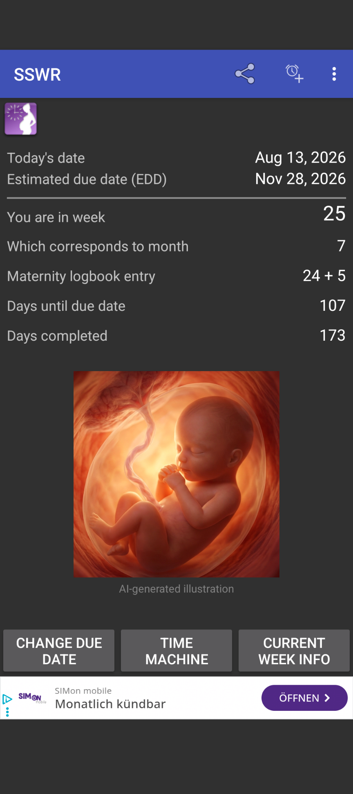
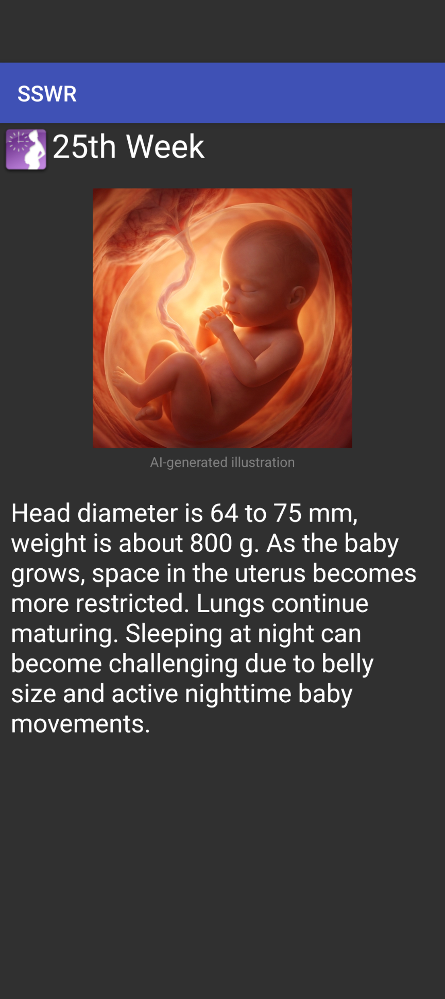
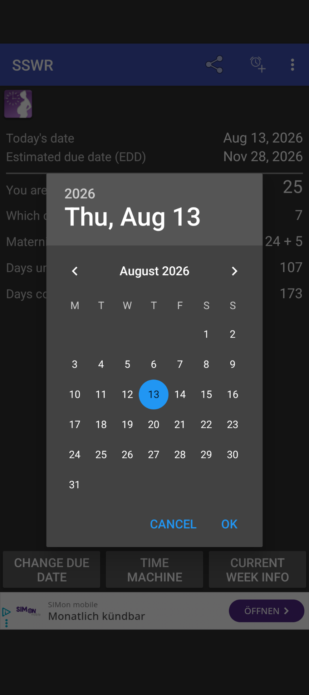

🔍 Vergrößern
Hauptansicht & Übersicht
Alle wesentlichen Daten auf einen Blick: berechnete SSW, Schwangerschaftsmonat, Mutterpass-Eintrag, Countdown sowie die wöchentliche Entwicklungsillustration.
Sie sind schwanger oder betreuen werdende Mütter? Der SSWR richtet sich an Schwangere, Hebammen und medizinisches Personal, die mit wenigen Klicks die exakte Schwangerschaftswoche, den Eintrag im Mutterpass und wichtige Entwicklungsmeilensteine berechnen möchten.

Alle wichtigen Berechnungen und Informationen rund um Ihre Schwangerschaft – schnell, präzise und übersichtlich.
Berechnung der genauen Schwangerschaftswoche, des aktuellen Monats sowie des offiziellen Mutterpass-Eintrags (z. B. 24 + 5).
Sehen Sie auf einen Blick, wie viele Tage Sie bereits schwanger sind und wie viele Tage noch bis zum errechneten Entbindungstermin (E.T.) verbleiben.
Umfassende Entwicklungsdaten zu jeder Schwangerschaftswoche mit Fötus-Illustrationen, Kopfumfang, Gewicht und medizinischen Hinweisen.
Ermitteln Sie Ihren Schwangerschaftsstatus für jedes beliebige Datum in der Vergangenheit oder Zukunft – ideal zur Vor- und Rückschau.
Das praktische Android-Widget bringt die aktuelle SSW und wichtige Tageszähler direkt auf Ihren Startbildschirm.
Alle eingegebenen Daten (wie der Entbindungstermin) werden ausschließlich lokal auf Ihrem Gerät gespeichert. Keine Serverübertragung.
Entdecken Sie die moderne, benutzerfreundliche Oberfläche von SSWR.
Alle wesentlichen Daten auf einen Blick: berechnete SSW, Schwangerschaftsmonat, Mutterpass-Eintrag, Countdown sowie die wöchentliche Entwicklungsillustration.

🔍 VergrößernAusführliche Einblicke in jede Schwangerschaftswoche (1–42) mit Maßen zu Kopfdurchmesser, aktuellem Gewicht und wichtigen Meilensteinen des Fötus.

🔍 VergrößernInteraktiver Kalender-Dialog zur einfachen Anpassung des errechneten Entbindungstermins oder zur Ermittlung des Status an beliebigen Stichtagen.
Installieren Sie die App einfach und sicher direkt über den Google Play Store oder scannen Sie den QR-Code mit der Kamera Ihres Smartphones.